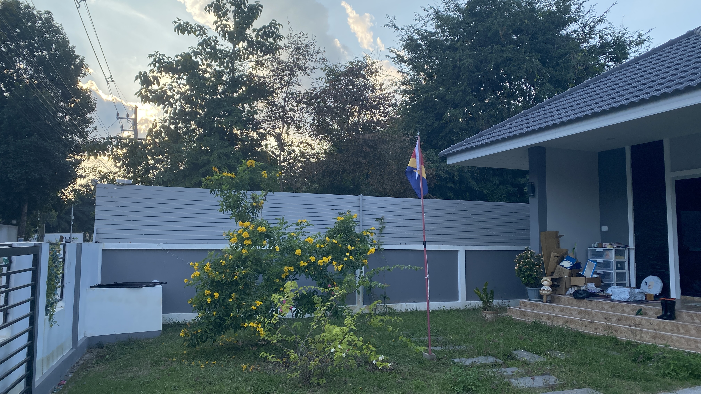
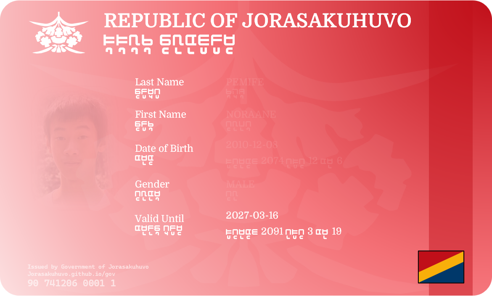

JORASAKUHUVIAN REPUBLIC
TTro jRD]Fs
TTro jRD]Fs



Applicants are required to provide accurate information and supporting documents where necessary. All applications will be reviewed by the Government of Jorasakuhuvo.
Jorasakuhuvian Republic Citizenship Application Form
Citizens of the Jorasakuhuvian Republic enjoy the following fundamental rights:
• Freedom of expression and peaceful political activity